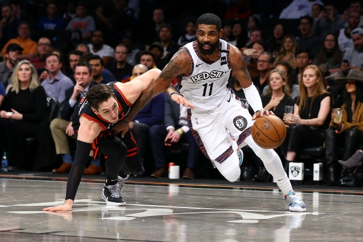

Intermediate Basketball Training
Basketball is a game that demands a mix of athletic skills, coordination, and smart thinking. Well-structured drills help players improve their skills step by step. When players practice regularly and apply what they practice in scrimmages, pick-up games, or tournaments, the rate of improvement increases, and they can build strong basic skills that help them learn and perform more advanced moves later on.
Source: The Film Room Training Video
Hone your Skills
Advanced Ball Handling
The Crossover: Learning to change direction quickly to move past a defender.
Between the Legs & Behind the Back: Essential moves to protect the ball while under pressure.
The Importance of Dribbling the Ball
Dribbling the ball, is one of the essential basketball skills players use to create or make plays, advance the ball and avoid being trapped by defense. These are the important things to put in my mind about dribbling the ball: Ball control, Maneuverability, Creating Space, Initiating offense, and Breaking Presses or Defensive sets.
The Best Ballhandler of all time

Kyrie Irving demonstrates effectively how to use dribbling to create and make plays.
| Program | Skill Level | Focus | Duration |
|---|---|---|---|
| Beginner | New Players | Fundamentals: dribbling, shooting, basic defense | 4 Weeks |
| Intermediate | Some Experience | Advanced shooting, defensive skills, conditioning | 6 Weeks |
| Advanced | Skilled Players | Competitive play, teamwork, game strategy | 8 Weeks |
| For Teams | Teams / Clubs | Team drills, tactics, tournament preparation | Custom / Variable |